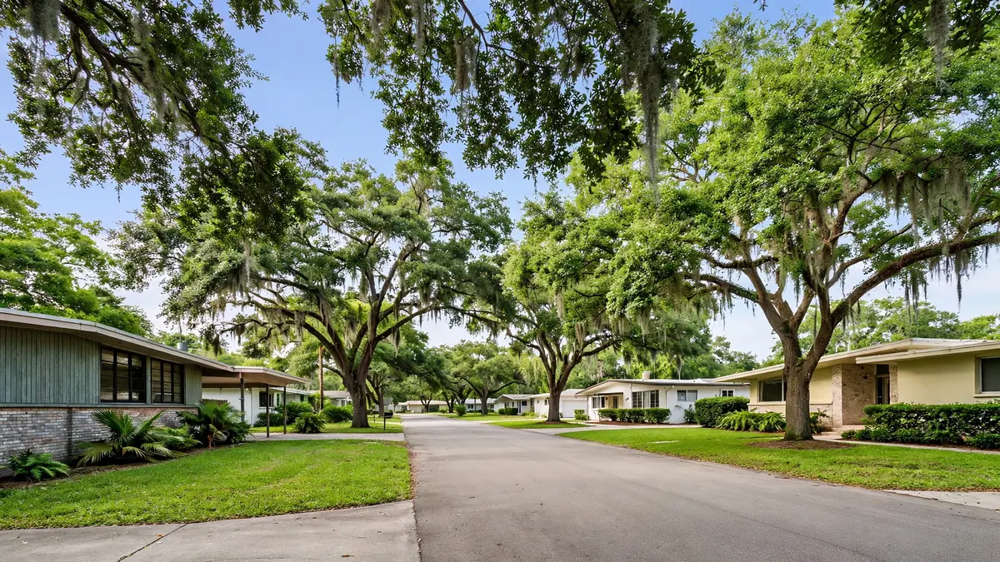

Emergency Water Cleanup in Boulevard Heights, Hollywood FL
ZIP Code: 33023 / 33024

Boulevard Heights is a comfortable residential suburb where family life runs on the usual household systems. Hollywood Water Damage Experts provides emergency water cleanup for Boulevard Heights and ZIP 33023. We bring the full process to Boulevard Heights: extraction, detailed moisture mapping, monitored structural drying, and clear records for any leak, flood, burst pipe, or sewage backup.
Water Emergencies We See in Boulevard Heights
Suburban water losses are democratic — they hit every home eventually. Dishwasher and washing-machine failures, ice-maker drips, water-heater ruptures, toilet overflows, and AC condensate backups form the core caseload. Heavy rain tests roofs and gutters, and the occasional tropical downpour finds the weak flashing. The pattern is familiar; the urgency is always personal.
Familiarity helps us work fast. We know these loss types cold, so our Boulevard Heights response focuses on execution: rapid extraction, precise moisture mapping, and monitored drying that does not quit early. In this humidity, almost dry is not dry — we verify with meters before equipment comes out.
What Local Water Cleanup Looks Like
After stopping the source and ruling out hazards, we extract standing water. Moisture mapping with meters and thermal imaging then finds every affected assembly — inside walls, under floors, above ceilings. Drying equipment is placed by reading, monitored, and verified.
When water is contaminated, we contain the area, remove unsalvageable porous materials, and sanitize. Clean-water jobs proceed to full structural drying. We document conditions and work with photos and logs for your records.
Services Available for Boulevard Heights (33023 / 33024)
Property owners in Boulevard Heights can request the full range of our Hollywood services, including:
- Emergency water extraction
- Flood cleanup
- Sewage backup cleanup
- Burst pipe cleanup
- Roof leak cleanup
- Structural drying
- Mold remediation support after water events
- Appliance leak cleanup
For the complete list, visit all water cleanup services. Neighborhood coverage for the rest of the city is listed on our service areas page. The main overview of water damage restoration in Hollywood, FL is on the homepage.
Insurance Documentation and Clear Communication
Many sudden water losses are claimed under homeowners or commercial policies. We do not decide coverage. What we provide is a clear record of conditions and work: photos, moisture readings, and a straightforward description of what was done. That information helps you and your adjuster understand the scope. If you need help understanding the next administrative step, we can point you to practical next actions without overpromising on claim outcomes.
How to Get Help in Boulevard Heights
Call (754) 294-7959 for 24/7 emergency response in Boulevard Heights and ZIP 33023 / 33024. Tell us what you see, whether water is still flowing, and any safety concerns such as electrical panels near wet areas. A crew is dispatched with the equipment needed for extraction and drying. For non-emergency questions, the same number reaches the team during normal business windows.
Practical guides — what to do after water damage, how water categories work, and mold timing in Florida — are available on our blog.
Frequently Asked Questions — Boulevard Heights
What is the first thing I should do when I find water?
Stop the source if you safely can — shutoff valve, appliance valve, or main. Then call (754) 294-7959. Move valuables out of the water if it is safe.
How long does the drying equipment stay?
Typically several days, checked daily. We remove it as soon as meter readings confirm materials are dry.
Will my homeowners insurance cover this?
Sudden accidental losses usually are; gradual issues often are not. Our documentation supports whatever claim you file.
Can I stay in the house during drying?
Usually yes. We place equipment to minimize disruption and will tell you about any areas to avoid.